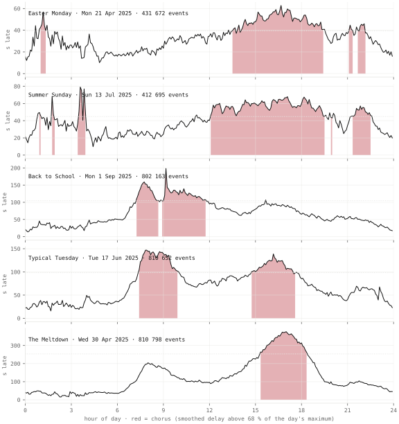

Note · 14 September 2026 · Prague public transport in 2025, as sound
Delayed All the Time: Prague public transport as sound
A browser player that turns five days of Prague public transport in 2025 into synthesised disco tracks, with each transport mode as an instrument and each day's key set by its mean surface delay.
- stop events on the record
- 3 267 980 five days of 2025, all modes · administrative count
- mean surface delay by day
- 36–164 s bus, tram, trolleybus · administrative count
- one day
- 288 beats 5-minute windows · 116 BPM · 24 h ≈ 2.5 min · fixed by design
- source history
- 121 197 794 vehicle-location records, 15 March – 8 September 2025 · Golemio · administrative count
Overwhelmed? Here's the short version
- The same day always produces the same track: the mapping from data to sound contains no randomness, and no audio is sampled.
- The rush-hour choruses and the keys come from thresholds set by hand, so the fit between the music and the working day reflects those choices and is not a finding about the network.
- The piece makes no statistical claim. It shares its data source with the thesis on delay persistence but plays city-wide five-minute averages, which is a different object from the route-level trip dynamics the thesis estimates.
- The mean delay behind each key counts early running as negative, so a day with many early departures sounds brighter than its lateness alone would make it.
Photo: Yannick Loriot · CC BY 2.0

The record was made alongside a master's thesis on delay persistence in the Prague network, which uses the same Golemio history of 121 197 794 vehicle-location records from 15 March to 8 September 20251. The record uses five days of it, counted as stop events, one per vehicle arrival at a stop, and aggregated into 5-minute windows per mode: the number of events, the mean arrival delay and its 90th percentile. Arrivals with a delay outside −600 to 3 600 s are left out before counting and averaging, and early arrivals enter the mean as negative values, so early running offsets lateness in every mean delay on this page. Only these aggregates are published; the raw records are not redistributed2.
The five days were chosen by rules written into the extraction script. The typical Tuesday, 17 June, is the weekday closest to the median of both the daily event count and the daily mean delay across the whole period; the Meltdown, 30 April, is the day with the highest mean delay in the data; Easter Monday, 21 April, the day with the lowest; Back to School, 1 September, the first school day of the year; and the Summer Sunday, 13 July, the holiday-season Sunday with the least traffic. The dates are fixed in the script, and the computation that ranked the days is not in the repository. The cause of the high delays on 30 April was not investigated2.
How the data maps to the sound
One day is 288 five-minute windows played as 288 beats, and at 116 BPM twenty-four hours take about two and a half minutes. Each mode is an instrument whose volume follows its number of stop events in the window, and some instruments also follow delay. The metro averages a delay of 7 s on a typical weekday and carries the kick drum, so the beat stops when the metro closes at night. Buses, with about 557 000 stop events on a weekday, play the chord stabs, whose detune in cents grows with the current bus delay. Trains average 111 s late on a typical weekday and play no instrument, though they remain in the player's own traffic chart2.
| element | data source |
|---|---|
| kick drum + bass | metro stop events in the window |
| hi-hats + guitar plucks | tram stop events set the volume; tram delay detunes the plucks |
| chord stabs | bus stop events set the volume; bus delay sets the detune in cents |
| claps + cowbell | trolleybus stop events set the volume; the cowbell enters when trolleybus traffic is high and in every chorus |
| bell | ferry stop events: three on a typical Tuesday, dozens in summer |
| lead melody | city-wide event-weighted surface delay, quantised to the day's scale; the later the network runs, the higher the line |
| trains | no instrument; shown in the player's traffic chart only |
The song structure follows one rule. When the smoothed, event-weighted mean delay of bus, tram and trolleybus exceeds 68 % of that day's maximum, the track moves into the chorus, and the two beats before each chorus break down into a snare roll. On the typical Tuesday the rule marks roughly 07:25–10:00 and 14:45–17:40, with the delay peaking at 145 s around 07:55. The 68 % threshold is a hand-set parameter, and the repository does not record how it was chosen, so its match with the two rush hours is a property of that choice. The arrangement, the swing and the mix are documented in the repository's README2.
The five days and their keys
Each day is played in D, in a mode chosen by its mean surface delay and running from bright to dark: under 40 s lydian, under 70 s ionian, under 100 s dorian, under 130 s aeolian, and phrygian above that. These cut-offs, too, were set by hand. Fig. 1 is recomputed for this page from the aggregates embedded in the player, and its daily means match the table2.
| day | stop events | mean surface delay | key |
|---|---|---|---|
| Easter Monday · 21 Apr 2025 | 431 672 | 36 s | D lydian |
| Summer Sunday · 13 Jul 2025 | 412 695 | 43 s | D ionian |
| Back to School · 1 Sep 2025 | 802 163 | 82 s | D dorian |
| Typical Tuesday · 17 Jun 2025 | 810 652 | 85 s | D dorian |
| The Meltdown · 30 Apr 2025 | 810 798 | 164 s | D phrygian |

tools/charts/delayed.py from the player's embedded aggregates (Golemio, 2025); the daily means are 36 · 43 · 82 · 85 · 164 s, as in the table.References
- Šandová, B. (2026). Persistence Dynamics and Welfare Costs of Urban Public Transport Delays. Master's thesis, Institute of Economic Studies, Charles University. Summary: bsandova.com/texts/thesis.
- Šandová, B. (2026). Delayed All the Time. On Time, Occasionally. Software, github.com/sandovabarbora/delayed-all-the-time, commit
798f726: README (instrument mapping, chorus rule, keys, production notes),index.html(the player),sonification_days.json(five days, 5-minute bins per mode: event count, mean arrival delay, p90, arrivals with delays outside [−600, 3 600] s excluded),extract_sonification_data.py(day-selection criteria and aggregation from the Golemio stop-time history). Data: Prague Integrated Transport via Golemio, Operator ICT. Accessed 29 September 2026.
Change log
- 14 September 2026: first published as "Delayed All the Time. On Time, Occasionally."
- 29 September 2026, version 2: moved to Notes and retitled. Removed the AR(2) equation and its reading ("a shock … is still three-quarters there in the next"), which misstated the one-step response and conflated the thesis's route-level dynamics with the city-wide averages the record plays; with it went the 0.727 / 0.715 / 0.73 figures, which remain on the thesis page. Removed the claim that the ear hears the pattern before the table does. The facts no longer lead with "121 M stop events": the source is given in the thesis's unit, 121 197 794 vehicle-location records, and the record's own size as 3 267 980 stop events, the sum of the five days in the track table. Added the day-selection criteria from the extraction script, a statement that the cause of the 30 April delays was not investigated, that the 68 % chorus threshold and the key cut-offs were set by hand, and that mean delays include early running and leave out arrivals with delays outside [−600, 3 600] s (the extraction query filters them; it does not clip them). The Summer Sunday key is named D ionian, as in the rule, instead of D major. The trains row now says which chart shows them. Fixed the thesis link. Added what the tram and trolleybus instruments follow, the embedded player, and the data and licence lines. Cut the production-notes paragraph (58 % shuffle, side-chain, −4.5 dB shelf at 6 kHz, eight-beat blocks; now in the README only), the liner notes, the closing line of the homage disclaimer, the repeated statements that no raw records are redistributed, and the footer note that duplicated the figure caption. The short version no longer repeats the deck or the facts.
- Checked against editorial standard v1 on 29 September 2026.